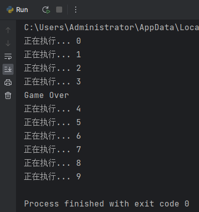
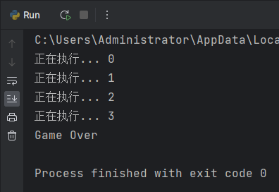

<!DOCTYPE lake>
<h2 data-lake-id="fHn4p" data-lake-index-type="2" id="fHn4p"><span data-lake-id="u537bff69" id="u537bff69" style="color: rgba(0, 0, 0, 0.87)">守护线程概念</span></h2><p data-lake-id="uc71a4c7f" id="uc71a4c7f"><span data-lake-id="u7ee66c91" id="u7ee66c91" style="color: rgba(0, 0, 0, 0.87)">守护线程：如果在程序中将子线程设置为守护线程，则该子线程会在主线程结束时自动退出，设置方式为，</span></p><span class="yuque-card-unsupported">[codeblock]</span><p data-lake-id="u3c198448" id="u3c198448"><span data-lake-id="ud684ee8d" id="ud684ee8d" style="color: rgba(0, 0, 0, 0.87)">注意：要在</span><code data-lake-id="ub2b14424" id="ub2b14424"><span data-lake-id="uf2f8763c" id="uf2f8763c" style="color: rgba(0, 0, 0, 0.87)">thread.start()</span></code><span data-lake-id="u959dd0b9" id="u959dd0b9" style="color: rgba(0, 0, 0, 0.87)">之前设置，默认是</span><code data-lake-id="u3c73912c" id="u3c73912c"><span data-lake-id="ubbfb47a8" id="ubbfb47a8" style="color: rgba(0, 0, 0, 0.87)">False</span></code><span data-lake-id="u3d31274b" id="u3d31274b" style="color: rgba(0, 0, 0, 0.87)">的，也就是主线程结束时，子线程依然在执行。</span></p><p data-lake-id="u4245474b" id="u4245474b"><span data-lake-id="u39ac76b1" id="u39ac76b1" style="color: rgba(0, 0, 0, 0.87)">​</span><br/></p><p data-lake-id="uc78d244a" id="uc78d244a"><span data-lake-id="uead1b183" id="uead1b183" style="color: rgba(0, 0, 0, 0.87)">对于python应用我们都知道main方法是入口，它的运行代表着主线程开始工作了，我们也知道Python虚拟机里面有垃圾回收器的存在使得我们放心让main飞奔，然而这背后的故事是垃圾回收线程作为守护着主线程的守护线程默默的付出着。</span></p><p data-lake-id="u924fd3c6" id="u924fd3c6"></p><p data-lake-id="ubf587061" id="ubf587061"></p><p data-lake-id="u2badb4f9" id="u2badb4f9"><br/></p><p data-lake-id="u57f0414a" id="u57f0414a"><span data-lake-id="u5febaa16" id="u5febaa16" style="color: rgba(0, 0, 0, 0.87)">如下代码，主线程执行了</span><code data-lake-id="u26c4bb64" id="u26c4bb64"><span data-lake-id="u63583eee" id="u63583eee" style="color: rgba(0, 0, 0, 0.87)">exit()</span></code><span data-lake-id="u6375da8b" id="u6375da8b" style="color: rgba(0, 0, 0, 0.87)"> 【其实并没有真正结束】，子线程还在继续执行</span></p><span class="yuque-card-unsupported">[codeblock]</span><p data-lake-id="ubcbf5380" id="ubcbf5380"></p><h2 data-lake-id="ZJ4cq" id="ZJ4cq"><span data-lake-id="u8847cb64" id="u8847cb64" style="color: rgba(0, 0, 0, 0.87)">2. 设置守护线程</span></h2><p data-lake-id="ua8112529" id="ua8112529"><br/></p><span class="yuque-card-unsupported">[codeblock]</span><p data-lake-id="u437b1d7b" id="u437b1d7b"></p><p data-lake-id="uffe2cfe6" id="uffe2cfe6"><br/></p><blockquote data-lake-id="ucb4ffb62" id="ucb4ffb62"><p data-lake-id="ucbc298c4" id="ucbc298c4"><span data-lake-id="u6f6a0c0d" id="u6f6a0c0d">必须所有的子线程都设置为守护线程，才能一起退出</span></p></blockquote>